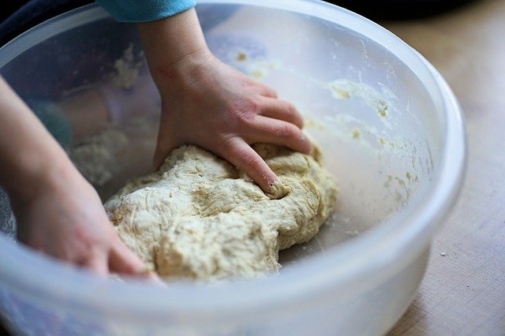

Nicolas Nguyen

Nicolas s'est chargé de la page de présentation pour vous permettre de découvrir notre concept et comme nous tous au reste du site en général!
Sofiane Elanzi

Sofiane, quand à lui, s'est chargé de la page d'acceuil pour vous permettre d'avoir accès à toutes les possibilités de ce superbe site. Puis commme Nicolas et Yasmine il a participé au reste du site!
Yasmine Maassouli

Yasmine a commencé par s'occuper de cette page et a participé au reste du site pour vous permettre de vous amuser à créer votre recette!